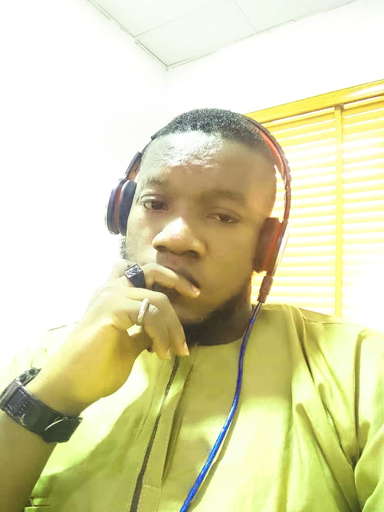

Ayomide Ashiru Résumé

Summary/Objective
A highly skilled and motivated Web Developer with 2 years of experience in designing and developing dynamic websites and web applications. Committed to delivering exceptional user experiences through clean and efficient code. Proficient in front-end and back-end technologies, with a strong attention to detail and a passion for continuous learning and innovation.
Education
BSc.Geography
University of Ibadan, City, Oyo State
Year of Graduation: 2015
Work Experience
- No Code Developer (Bubble & Webflow) - Dev and Design
-
Collaborated with cross-functional teams to deliver projects on time and within budget, maintaining a 98% on-time project completion rate.
-
Implemented front-end designs using HTML, CSS, and JavaScript frameworks, ensuring seamless user interaction and optimal performance.
-
Optimized website performance, resulting in a 40% reduction in page load time and improving user engagement
-
Implemented SEO best practices, leading to a 30% increase in organic search traffic and improving website visibility.
-
Collaborate with clients to understand their requirements and provide effective solutions that align with their goals and objectives.
-
Assisted in the development of website features, resulting in a 20% reduction in development time,
-
Collaborated with senior developers to identify and fix bugs, reducing website downtime by 15%.
-
Integrated third-party APIs, such as payment gateways and social media platforms, improving website functionality and user experience.
-
Conducted A/B testing and data analysis, resulting in a 15% increase in website conversion rates.
Skills
- Programming Languages: HTML5, CSS3, JavaScript
-
Strong understanding of responsive design principles and mobile-first development
- Version Control: Git
- Responsive Web Design
- Strong Problem-solving Skills
- Attention to Detail
- Design tools: Photoshop, Illustrator, Figma, Corel Draw.
- Agile Development Methodologies
Awards/Certification
UX Design Course by Perxels and Dev and Design
Webflow Certification
Airdev Bubble Certification
Others